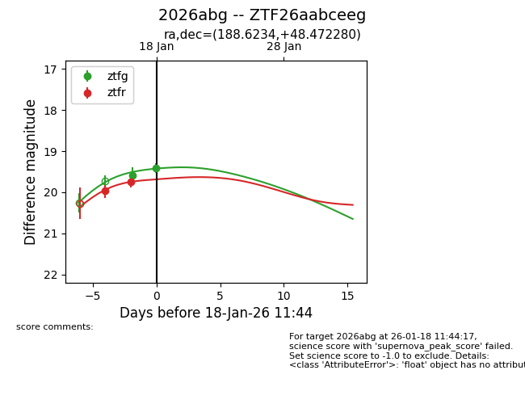
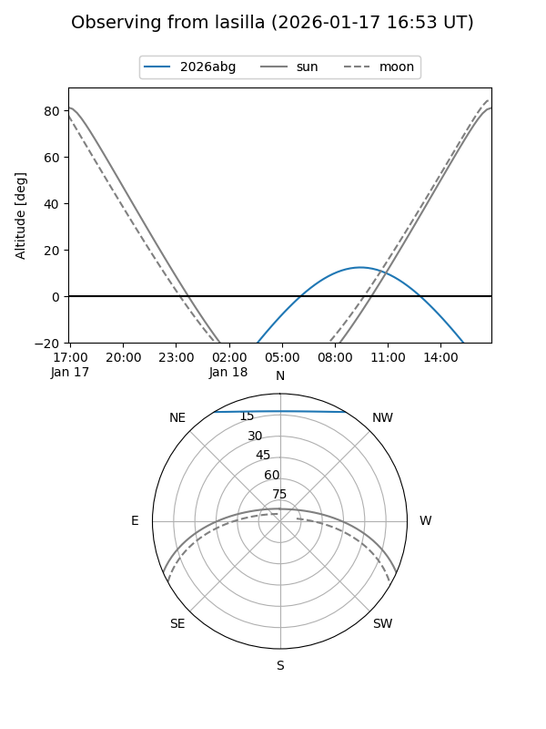
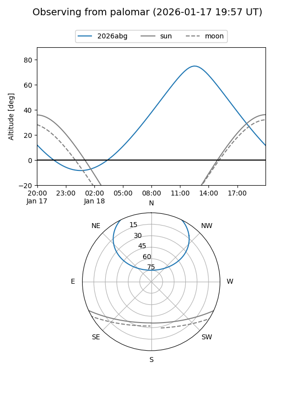

2026abg
Target 2026abg at 2026-01-25 11:11
Aliases and brokers:
FINK: link
Lasair: link
ALeRCE: link
TNS: link
YSE: link
alt names
ZTF26aabceeg (ztf,fink_ztf)
2026abg (tns,yse)
Coordinates:
equatorial (ra, dec) = 188.6234,+48.47228
equatorial (HMS+DMS) = 12:34:29.62,+48:28:20.21
galactic (l, b) = (130.5779,+68.40365)
Flags:
Photometry:
last ztfg=19.42, ztfr=19.39
4 ztfg, 4 ztfr detections
Lightcurve

Visibility


Additional plots